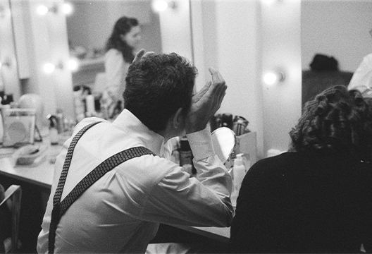
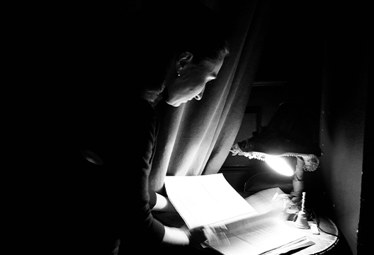

Фотокнига с интервью "По ту сторону"
Это исследование не просто профессии актера, но самой магии театра. Я изучаю специфику работы актера и не только. Мне важны его эмоции, каким способом происходит трансформация образа: эмоциональная и визуальная, та, что связана с нанесением грима и сменой костюмов.
 